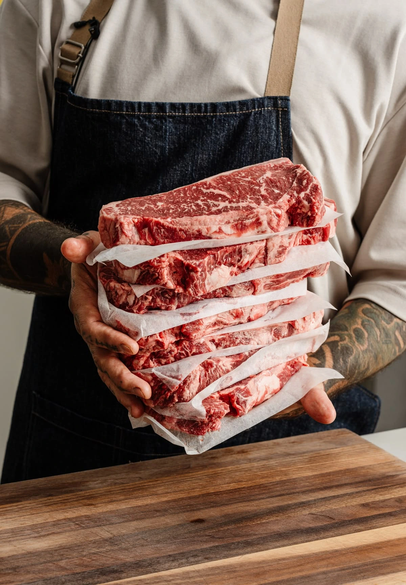

La
Selección
Cada gran hamburguesa comienza con una buena materia prima. Seleccionamos cortes de carne de calidad, buscando el equilibrio justo entre sabor, textura y grasa. Porque la diferencia se encuentra desde el primer ingrediente.
